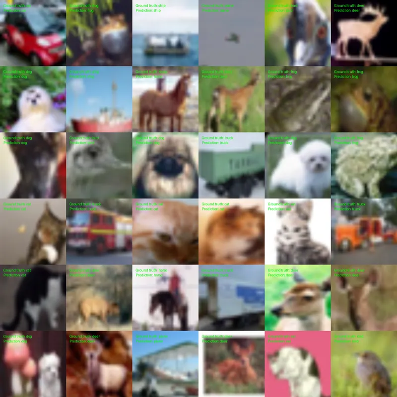
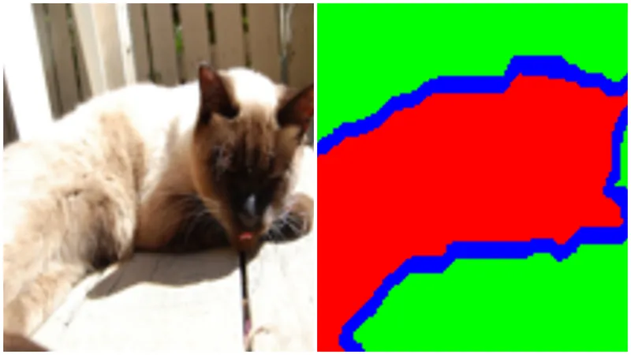
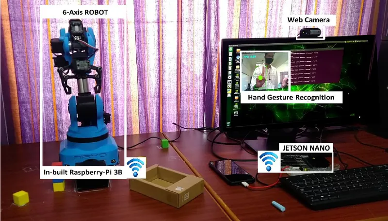
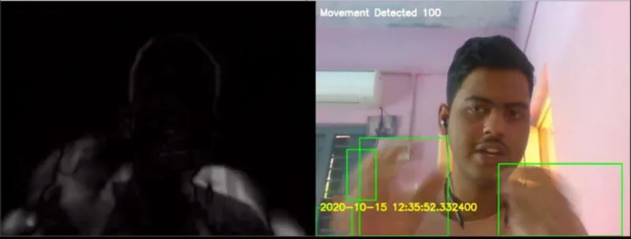

Graph-Based Optimisation and SLAM
Graph-based SLAM system fusing compass, GPS and landmark observations. Implemented the prediction step and analysed state, covariance and chi-squared behaviour, exploring graph pruning for efficiency.
I build real-time localisation, mapping and sensor-fusion systems that let autonomous vehicles operate where GNSS can't be trusted.
Robotics engineer building real-time localisation, mapping and sensor-fusion systems for autonomous robots. I specialise in SLAM, state estimation and multi-sensor fusion — LiDAR, camera, IMU and GNSS/RTK — for GNSS-denied environments, HD map generation and production ROS2 software.
I currently lead localisation at Kybera, where I own the architecture of the localisation, mapping and perception stack for autonomous trucks operating in seaports. Strong C++ and Python engineer with a track record of taking systems from research through to deployment on real hardware.
Reduction in localisation error after redesigning the multi-sensor fusion framework
Navigation downtime eliminated across the autonomous truck fleet
Sensor perception rig calibrated — multi-LiDAR, camera and IMU at ~200 MB/s
Peer-reviewed publications in robotics and machine learning
Kybera (formerly Auriga and Aidrivers) — London, UK
Mar 2024 – PresentCiti — Chennai, India
Jul 2021 – Jul 2023Managers: Kathleen Koszuta (Senior Vice President), Balaji Rajeshwaran (Vice President)
Visteon — Chennai, India
May 2019 – Jul 2019Represented 40 students on the MSc Robotics & Computation programme, coordinating with 30+ representatives to resolve 50+ student concerns.
Taught weekly machine learning, computer vision and embedded sessions, training a 150+ member community to compete in national robotics challenges.
"Best Student of the Department". Also a hackathon winner at NIT Trichy, awarded £1,500.
Graph-based SLAM system fusing compass, GPS and landmark observations. Implemented the prediction step and analysed state, covariance and chi-squared behaviour, exploring graph pruning for efficiency.
Robotic arm that detects, counts and sorts objects while avoiding obstacles, using vision-based shape and obstacle detection with cartesian and circular motion planning. 90% success rate across varied orientations.
Quadcopter simulated with a non-linear dynamics model, with full-state feedback control implemented to track desired trajectories.
Latent state-space models combined with a GAN architecture and a novel trading loss for stock-return forecasting, validated across diverse datasets.

CIFAR-10 classification using a Vision Transformer trained with MixUp augmentation, comparing sampling strategies.

Vector quantized variational autoencoder applied to improve image segmentation quality.
Seamless image cloning and gradient-domain compositing implemented from the Poisson image editing formulation.
Landmark-driven face morphing using Delaunay triangulation and piecewise affine warping.

Niryo One robotic arm driven by real-time hand gesture recognition running on an NVIDIA Jetson Nano.

Motion-triggered surveillance capture with real-time event sync to Firebase.
Real-time driver monitoring with eye-blink, blink-rate, head-pose and gaze tracking at ~20 FPS on a Raspberry Pi.
University College London — London, UK
2023 – 2024Thesis: "Enhanced Localisation for Autonomous Prime Movers in Seaports using Multi-Sensor Fusion"
Madras Institute of Technology, Anna University — Chennai, India
2017 – 2021CGPA: 8.63/10 (first class with distinction)
Dissertation: Hand Gesture Controlled Robotic Arm using Jetson Nano Developer Kit
Supervisor: Dr. V Sathiesh Kumar
Live counts from visitors to this site. Only a country code is ever recorded — never an IP address or a precise location.
Counted once per browser session.
Drag to rotate · hover a marker
Open to conversations about robotics, localisation and autonomy work.
London, United Kingdom